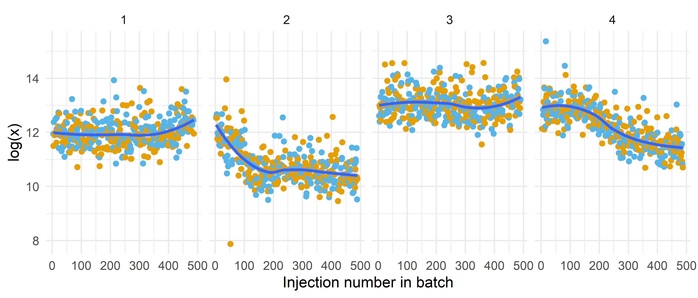
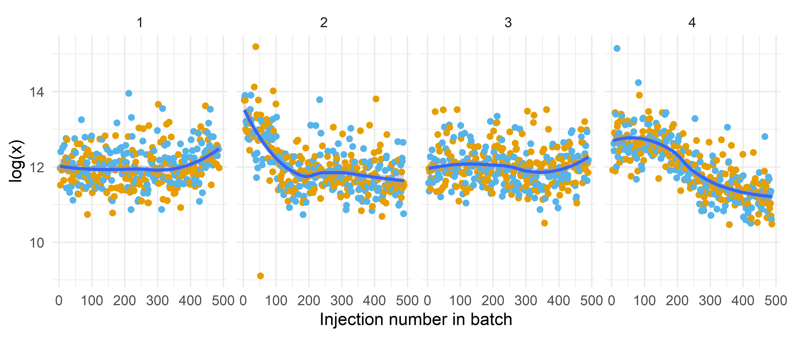
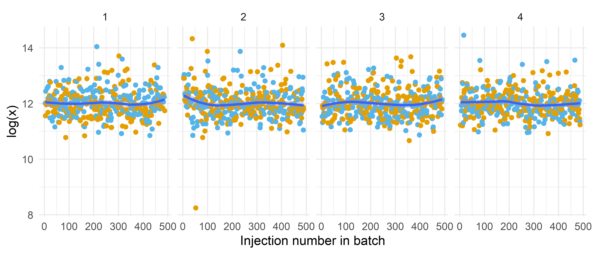

Conditional logistic regression1 is a classic tool in an epidemiologist’s toolkit. It’s usually used to analyse matched case-control studies. However, popular methodological guidance has either explicitly advocated for ‘breaking’ the matching and using ordinary logistic models instead, or has sometimes been interpreted that way, with the justification being potential small precision gains (Pearce (2016)). In this blog post I want to demonstrate the advantages that conditional logistic regression can have in well-designed matched case-control studies of omic data that contain a substantial amount of technical variation.
The example study
Let’s consider the following hypothetical omics study. Cases are 1:1 matched to controls on important covariates. Crucially, the case-control pairs are then block randomized over the analytical assay. That is, the matched pairs (blocks) are randomized over the plates and batches, and within the block we randomize the position of the case or control. In visual form where the numbers correspond to the matched pair:
This design ensures that the case and its matched control are processed consecutively and as such are processed under highly similar laboratory conditions (same plate, same batch, adjacent wells, similar time). However, the matching process has also introduced a bias – we have forced the controls to be more like the cases than they otherwise would be. This needs to be taken into account. I will show how epidemiologists do this before illustrating why conditional logistic regression is an elegant solution to technical variation.
One way to handle the bias from the matching process is by including dummy variables for all matched sets, effectively fitting a stratum-specific logistic regression model. In this model, the probability (\(\pi\)) of being a case within matched set \(k\) depends on the predictors \(x\) and a unique intercept \(\alpha_k\) for that specific set:
\[
\pi_k(\mathbf{x})=\frac{\mathrm{e}^{\alpha_k+\boldsymbol{\beta}^{\prime} \mathbf{x}}}{1+\mathrm{e}^{\alpha_k+\boldsymbol{\beta}^{\prime} \mathbf{x}}}
\]\(\alpha_k\) represents the baseline log-odds of being a case that are specific to stratum \(k\), capturing the effects of the matching factors and any other unmeasured matching set characteristics. \(\beta\) represents the log-odds ratios for the predictors \(x\), assumed to be constant across strata (Hosmer, Lemeshow, and Sturdivant (2013)).
This is somewhat feasible for large matching sets (i.e. many controls per case). However, such a fully stratified likelihood will need (\(n/2 - 1\)) extra parameters for 1:1 matched sets. This will lead to bias when using maximum likelihood because the number of parameters increases at the same rate as the sample size (see Breslow and Day 1980, sec. 7.1; also Hosmer, Lemeshow, and Sturdivant 2013, chap. 7).
Because of this bias, unconditional logistic regression with dummy variables is rarely used in epidemiology. More common is an unconditional logistic regression where the matching set indicators are not explicitly modeled. Instead, the matching is broken and the variables that were used for matching are added as predictor to the logistic model. Matched sets indicators are thus omitted. This approach also utilizes contrasts between matched pairs and pairs with only a control or case in it still contribute to the analysis.
Conditional logistic regression
Another approach is conditional logistic regression (CLR). Instead of trying to estimate the potentially numerous stratum-specific intercepts (\(\alpha_k\)) from the dummy variable model, CLR treats them as nuisance parameters and disregards their estimation such that we can use methods for conditional inference to create a likelihood function. After some derivation2, the conditional likelihood for the matched set \(k\) looks as follows for a 1:1 matched study design:
\[
l_k(\boldsymbol{\beta})=\frac{\mathrm{e}^{\beta^{\prime} \mathbf{x}_{1 k}}}{\mathrm{e}^{\beta^{\prime} \mathbf{x}_{1 k}}+\mathrm{e}^{\beta^{\prime} \mathbf{x}_{0 k}}} .
\] Where \(x_1\) and \(x_0\) correspond to the data from the case and control of a matched set \(k\) respectively, and \(\beta\) is the only unknown parameter (your exposure for example). In other words, this conditional likelihood is the probability that, within matched set \(k\), the case is in fact the case if we assume a stratum-specific logistic regression model. The full conditional likelihood can be obtained here by taking the product of the likelihoods for each matched set (or summing the log-likelihoods of course).
The important thing to remember for my argument is that – contrary to logistic regression where we break the matching – the effect of a predictor is only measured relative to the values in its matched set rather than relative to all values of the predictor (Hosmer, Lemeshow, and Sturdivant (2013)). In standard epidemiology training, this is expressed as ‘only disconcordant pairs contribute information to the analysis’. This is also why such training mentions that you cannot analyse factors that were matched on – these values are constant within a pair and this estimator is thus undefined.
In R you can easily fit a CLR by writing survival::clogit(is_case ~ 1 + survival::strata(pair) + x, data = df)3.
Technical variation
Next, let’s look at an example of (substantial) technical variation in an omics study. An untargeted metabolomic study in particular. The design was as outlined previously. In total, samples were processed in four batches consisting of five plates each. And because the samples were randomized over the assay we can safely assume that in expectation all these observations should randomly vary around a common mean. In other words, we should see no systemic trends along injection order. However, as you can see below, it seems that we have more than just random variation, because there is systematic variation by for example batch (see the different means for the batches (each panel is a batch, panels next to each other are consecutive batches)).
Code
df <- readr::read_csv('example_data.csv', show_col_types =FALSE)plot_feature <-function(df, outcome) { df |>ggplot(aes(x = inj_nr_in_batch, y = .data[[outcome]])) +geom_point(aes(color = status)) + see::scale_color_okabeito() +geom_smooth() +facet_wrap(~batch, nrow =1) +labs(x ='Injection number in batch', y ='log(x)') +theme_minimal() +theme(legend.position ='none')}df |> dplyr::mutate(log_x =log(x1)) |>plot_feature('log_x')

Adjustment
Now, let’s try to remove this technical variation. We can do easily do this using a random intercept model. This aligns well with the aforementioned assumption of random variation around a common mean. The first model that I will try, will adjust for the batch effect:
Code
m1 <- lme4::lmer(log(x1) ~1+ status + (1|batch), data = df)df |> dplyr::mutate(tech_var =predict(m1, random.only =TRUE), log_x_adj =log(x1) - tech_var) |>plot_feature('log_x_adj')

The batches now have a common mean, but there’s still substantial amount of variation along injection order. Let’s see if these are simply plate effects or something more complicated:
Code
m2 <- lme4::lmer(log(x1) ~1+ status + (1|batch/plate_nested_coding), data = df)df |> dplyr::mutate(tech_var =predict(m2, random.only =TRUE), log_x_adj =log(x1) - tech_var) |>plot_feature('log_x_adj')

Even though we did a pretty good job of eliminating the technical variation – at least visually speaking – I think that no matter how extensively we model and adjust for this variation, the remaining variation will be greater than the technical drift over just one position in the data. And this variation over one position is precisely the only (technical) variation that the CLR will utilize in our well designed example study. That is, in CLR we condition on the matched pair and both the case and control in the pair are approximately equally affected by the technical variation and this variation thus gets cancelled out. We have essentially matched on the technical variation. And in CLR these factors that are constant across a match set are adjusted away – even the unobserved ones!
Caveats and other designs
In this blog post, we saw that the key to dealing with technical variation in a case control design was (1) recognizing that technical variation over one position is likely minimal (relative to the total amount of technical variation) (2) recognizing that both measured and unmeasured factors in CLR are adjusted away (3) randomly locating a case and its control next to each other such that the technical variation would be minimal.
I think that all of this could be contingent on the total total amount of (exposure) variation in study, because sometimes contrasts between groups can be much larger than within groups and as such contribute more information to the analysis. I should probably run some simulations to check that (shouldn’t we all?).
There are of course many other designs than case-control studies. The case-cohort design for example. I do not have experience with case-cohort designs, but I do know that they are gaining popularity in environmental epidemiological omics studies because they easily allow for secondary analyses contrary to case-control studies (Lin and Zeng (2009), O’Brien, Lawrence, and Keil (2022)). I would be interested to know examples of similar clever designs that mitigate the impact of technical variation in those types of studies.
References
Breslow, Norman E, and Nicholas E Day. 1980. Statistical Methods in Cancer Research Volume i: The Analysis of Case-Control Studies. International Agency for Research on Cancer Scientific Publications. Lyon, France: International Agency for Research on Cancer.
Hosmer, David W, Stanley Lemeshow, and Rodney X Sturdivant. 2013. Applied Logistic Regression. 3rd ed. Wiley Series in Probability and Statistics. Wiley-Blackwell.
Lin, D. Y., and D. Zeng. 2009. “Proper Analysis of Secondary Phenotype Data in Case-Control Association Studies.”Genetic Epidemiology 33 (3): 256–65. https://doi.org/10.1002/gepi.20377.
O’Brien, Katie M., Kaitlyn G. Lawrence, and Alexander P. Keil. 2022. “The Case for Case-Cohort: An Applied Epidemiologist’s Guide to Re-Framing Case-Cohort Studies to Improve Usability and Flexibility.”Epidemiology (Cambridge, Mass.) 33 (3): 354–61. https://doi.org/10.1097/EDE.0000000000001469.
When deriving this conditional likelihood from the stratum-specific logistic model (which includes \(\alpha\)) the \(\alpha_k\) term (representing the combined baseline risk and effects of all factors constant within matching set \(k\), including matching variables) appears in both the numerator and denominator and thus mathematically cancels out. This cancellation is why we often say these matching set-constant effects are “absorbed” into a cluster-specific intercept; they are removed from the likelihood equation that needs to be solved. See Hosmer, Lemeshow, and Sturdivant (2013), chap. 7 for more details on this derivation.↩︎
@online{oosterwegel2025,
author = {Oosterwegel, Max J.},
title = {The Advantages of Conditional Logistic Regression in
(Metabol)omic Matched Case-Control Studies},
date = {2025-05-05},
url = {https://maxoosterwegel.com/blog/conditional-logistic-regression-omics/},
doi = {placeholder},
langid = {en}
}
For attribution, please cite this work as:
Oosterwegel, Max J. 2025. “The Advantages of Conditional Logistic
Regression in (Metabol)omic Matched Case-Control Studies.” May 5,
2025. https://doi.org/placeholder.
![]()